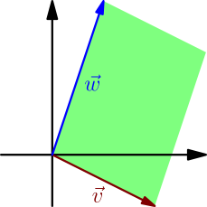

Determinant of transpose¶
Consider any $3 \times 3$ matrix $$ A = \begin{bmatrix} a&b&c \\ d&e&f \\ g&h&i \end{bmatrix}. $$ To compute its determinant as we did right after defining the determinant, we first have to find all $3 \times 3$ permutation matrices. There are $3! = 6$ of them, and here they are: $$ \begin{align} \begin{bmatrix} 1&0&0 \\ 0&1&0 \\ 0&0&1 \end{bmatrix} \quad \begin{bmatrix} 1&0&0 \\ 0&0&1 \\ 0&1&0 \end{bmatrix} \\\\ \begin{bmatrix} 0&1&0 \\ 1&0&0 \\ 0&0&1 \end{bmatrix} \quad \begin{bmatrix} 0&1&0 \\ 0&0&1 \\ 1&0&0 \end{bmatrix} \\\\ \begin{bmatrix} 0&0&1 \\ 1&0&0 \\ 0&1&0 \end{bmatrix} \quad \begin{bmatrix} 0&0&1 \\ 0&1&0 \\ 1&0&0 \end{bmatrix} \end{align} $$ The determinants of the permutation matrices are multiplied by the numbers from the original matrix where the permutation matrix has $1$, and those results are added, so we get $$ \begin{align} \det(A) &= \red{aei\det\begin{bmatrix} 1&0&0 \\ 0&1&0 \\ 0&0&1 \end{bmatrix}} + \red{afh\det\begin{bmatrix} 1&0&0 \\ 0&0&1 \\ 0&1&0 \end{bmatrix}} \\ &~~+ \red{bdi\det\begin{bmatrix} 0&1&0 \\ 1&0&0 \\ 0&0&1 \end{bmatrix}} + \blue{bfg\det\begin{bmatrix} 0&1&0 \\ 0&0&1 \\ 1&0&0 \end{bmatrix}} \\ &~~+ \green{cdh\det\begin{bmatrix} 0&0&1 \\ 1&0&0 \\ 0&1&0 \end{bmatrix}} + \red{ceg\det\begin{bmatrix} 0&0&1 \\ 0&1&0 \\ 1&0&0 \end{bmatrix}}. \end{align} $$ Now consider what changes if we replace the original matrix with its transpose, and we instead compute the determinant of $$ A^{\T} = \begin{bmatrix} a&d&g \\ b&e&h \\ c&f&i \end{bmatrix}. $$ This means that we swap $b$ with $d$, $c$ with $g$ and $f$ with $h$. Everything marked in red will stay the same: because the red permutation matrices are their own transposes, we pick the same numbers from the original matrix in front of them, regardless of whether or not it is transposed. The blue and green matrix will pick each other's numbers from the matrix, so we get $$ \begin{align} \det(A^{\T}) &= \red{aei\det\begin{bmatrix} 1&0&0 \\ 0&1&0 \\ 0&0&1 \end{bmatrix}} + \red{afh\det\begin{bmatrix} 1&0&0 \\ 0&0&1 \\ 0&1&0 \end{bmatrix}} \\ &~~+ \red{bdi\det\begin{bmatrix} 0&1&0 \\ 1&0&0 \\ 0&0&1 \end{bmatrix}} + \green{cdh}~\blue{\det\begin{bmatrix} 0&1&0 \\ 0&0&1 \\ 1&0&0 \end{bmatrix}} \\ &~~+ \blue{bfg}~\green{\det\begin{bmatrix} 0&0&1 \\ 1&0&0 \\ 0&1&0 \end{bmatrix}} + \red{ceg\det\begin{bmatrix} 0&0&1 \\ 0&1&0 \\ 1&0&0 \end{bmatrix}}. \end{align} $$ In fact, the blue and green determinant are equal, because both can be turned into $\det(I)=1$ with two swaps of rows.
Any $3 \times 3$ matrix $A$ satisfies $\det(A^{\T})=\det(A)$.
Let's think about how this works in general with a square matrix of any size $n \times n$. We have $n!$ permutation matrices. Again, if a permutation matrix is its own transpose, its contribution to $\det(A)$ will remain unchanged if we replace $A$ with $A^{\T}$. Because the transpose of a permutation matrix is also a permutation matrix, we can group other permutation matrices into pairs that are each other's transposes; in the $3 \times 3$ case, we only had one such pair (the green and the blue determinant), but there can be multiple pairs. Just like above, if we want to get $\det(A)=\det(A^{\T})$ for all matrices $A$, it is enough if it works with permutation matrices, because then both permutation matrices of each pair will have the same determinant.
For any permutation matrix $P$, we have $$ \det(P) = \begin{cases} 1, & \text{if it takes an even number of row swaps to turn $P$ into $I$} \\ -1, & \text{if it takes an odd number of row swaps to turn $P$ into $I$}. \end{cases} $$ Any swap of rows in a permutation matrix can be viewed as a swap of columns. For example, the operation below can be viewed as swapping the first two rows, or as swapping the left and right column: $$ \begin{bmatrix} 1&0&0 \\ 0&0&1 \\ 0&1&0 \end{bmatrix} \to \begin{bmatrix} 0&0&1 \\ 1&0&0 \\ 0&1&0 \end{bmatrix} $$ Therefore $$ \det(P) = \begin{cases} 1, & \text{if it takes an even number of column swaps to turn $P$ into $I$} \\ -1, & \text{if it takes an odd number of column swaps to turn $P$ into $I$}. \end{cases} $$ Because $\det(P)$ does not distinguish between rows and columns of $P$, we have $\det(P^{\T})=\det(P)$.
Any square matrix $A$ satisfies $\det(A^{\T})=\det(A)$.
Examples:
- Determinant is linear not only as a function of each row (see the definition), but also as a function of each column. For example, $$ \det\begin{bmatrix} 1 & \red 2 & 3 \\ 4 & \red 6 & 1 \\ 2 & \red 4 & 3 \end{bmatrix} = \red2\det\begin{bmatrix} 1 & \red 1 & 3 \\ 4 & \red 3 & 1 \\ 2 & \red 2 & 3 \end{bmatrix}. $$ To see why this happens, replace both matrices with their transposes. This doesn't change the determinants, but bringing the $\red 2$ in front turns into using linearity with rows.
-
A $2 \times 2$ determinant can be thought of as the area between the two row vectors,
possibly with a minus sign in front depending on orientation,
but also as the area between the column vectors:
$$
\det\begin{bmatrix}
\red{v_x} & \red{v_y} \\
\blue{w_x} & \blue{w_y}
\end{bmatrix}
= \det\begin{bmatrix}
\red{v_x} & \blue{w_x} \\
\red{v_y} & \blue{w_y}
\end{bmatrix}
$$
